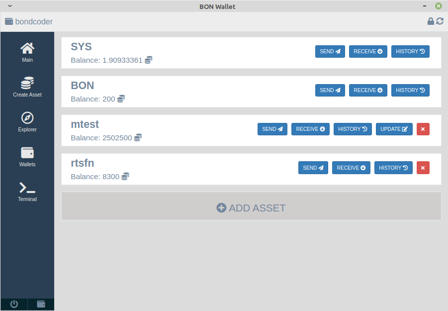

Advantages
Syscoin single and multi transactions
token single, multi and issue transactions
Simple token creation and update
Intuitive token and SYS manipulation
Built-in token explorer
Wallets management
User-friendly Syscoin Core terminal
Powered by Syscoin Core